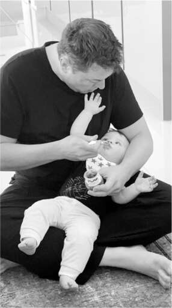
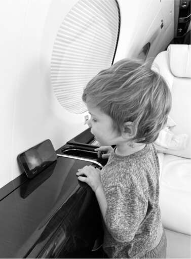
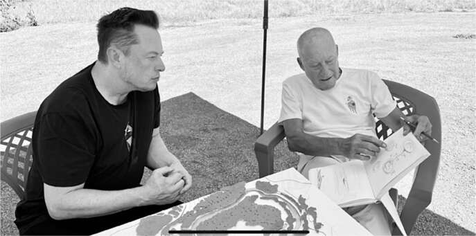

75 Ngày Của Cha
Tất cả các con của tôi
“Chúc mừng Ngày của Cha. Bố yêu tất cả các con rất nhiều.”
Bề ngoài, dòng tweet của Musk lúc 2 giờ sáng Ngày của Cha - 19 tháng 6 năm 2022 - có vẻ vô hại, thậm chí còn ngọt ngào. Nhưng ẩn dưới từ "tất cả" là một câu chuyện đầy kịch tính. Cô con gái chuyển giới Jenna của ông vừa tròn mười tám tuổi và đã ra tòa ở Los Angeles, nơi cô sống với mẹ, để chính thức đổi tên từ Xavier Musk thành Vivian Jenna Wilson. Cô tự gọi mình là “Jenna”, gần giống với tên mà mẹ cô, Justine, đã sử dụng, Jennifer Wilson, trước khi bà gặp và kết hôn với Musk. “Tôi không còn sống chung hoặc muốn có bất kỳ mối quan hệ nào với cha ruột của mình dưới bất kỳ hình thức nào”, cô tuyên bố trước tòa.
Musk đã chấp nhận việc chuyển giới của Jenna, dù ông không đồng tình với việc công khai đại từ nhân xưng. Ông tin rằng con gái từ chối mình vì lý tưởng chính trị của cô. "Đó là chủ nghĩa cộng sản hoàn toàn, và một quan điểm chung rằng nếu bạn giàu, bạn là kẻ xấu", ông nói.
Mọi chuyện khiến Musk rất bối rối. "Chúng ta đang cùng lúc được nói rằng không có sự khác biệt giới tính và rằng giới tính khác biệt sâu sắc đến mức phẫu thuật không thể đảo ngược là lựa chọn duy nhất", ông đăng trên Twitter tuần đó. "Có lẽ ai đó khôn ngoan hơn tôi có thể giải thích nghịch lý này." Sau đó, gần như một lời nhắc nhở với chính mình cũng như một tuyên bố, ông nói thêm: "Thế giới sẽ tốt đẹp hơn nếu chúng ta bớt phán xét."
Sự từ mặt của Jenna khiến Ngày của Cha trở nên đau buồn. "Anh ấy rất yêu Jenna và thực sự chấp nhận con bé", Grimes, người vẫn giữ mối quan hệ thân thiết với Jenna, chia sẻ. "Tôi chưa bao giờ thấy anh ấy đau lòng như vậy. Tôi biết anh ấy sẽ làm bất cứ điều gì để được gặp con bé hoặc để con bé chấp nhận anh ấy một lần nữa."
Thêm vào sự hỗn loạn là bí mật về cặp song sinh ông có với Shivon Zilis bị công khai. Khi mới sinh, hai đứa trẻ mang họ của mẹ. Nhưng việc xa cách con gái khiến Musk muốn thay đổi điều đó. "Khi Jenna bỏ 'Musk' khỏi tên mình, anh ấy thực sự rất buồn", Zilis nói. "Và anh ấy hỏi tôi, 'Em có đồng ý để hai đứa nhỏ mang họ anh không?'" Đơn xin thay đổi họ của họ sớm bị rò rỉ.
Đó là lúc Grimes phát hiện ra Zilis, người mà cô coi là bạn, đã sinh đôi với Musk. Khi đối chất với Musk, ông chỉ nói Zilis có quyền làm những gì cô ấy muốn. Grimes rất tức giận. Đến Ngày của Cha, tất cả họ đều vướng vào những cuộc tranh cãi về việc liệu Zilis và cặp song sinh của cô có thể dành thời gian với X và Y, con của Grimes hay không. Mọi chuyện thật rối ren.
Musk và Zilis tiếp tục tham dự các cuộc họp hàng tuần của Neuralink mà không bình luận gì về việc làm cha mẹ của họ. Cách để xoa dịu tình huống khó xử, theo ông, là nói đùa về nó trên Twitter. "Tôi đang cố gắng hết sức để giúp giải quyết cuộc khủng hoảng dân số", ông đăng. "Tỷ lệ sinh giảm là mối nguy hiểm lớn nhất mà nền văn minh phải đối mặt."
Techno Mechanicus Musk
Như thể Ngày của Cha năm 2022 là một trò chơi nhiều người chơi, nó còn có một tình tiết phụ khác. Musk và Grimes đã bí mật có thêm một đứa con thứ ba vào tuần đó, một cậu con trai tên là Techno Mechanicus Musk. Cậu bé, được sinh ra bởi người mang thai hộ, có biệt danh là Tau, theo chữ cái Hy Lạp đại diện cho số vô tỉ bằng hai lần pi. Giá trị xấp xỉ của nó, 6.28, trùng với ngày sinh của Musk, 28 tháng 6.
Họ giữ kín sự tồn tại của đứa con thứ ba này. Nhưng Musk nhanh chóng gắn bó với cậu bé. Trong một lần đến thăm nhà Grimes khi Tau được hai tháng tuổi, ông ngồi trên sàn nhà cho Tau ăn, cậu bé liên tục đưa tay lên nghịch râu của bố. "Tau thật tuyệt vời", Grimes nói. "Con bé sinh ra với đôi mắt nhìn thấu tâm hồn bạn, với rất nhiều hiểu biết. Trông con bé giống Spock nhỏ vậy. Chắc chắn con bé là một người Vulcan."
Vài tuần sau, Musk đang ngồi lặng lẽ giữa các cuộc họp tại Giga Texas, lướt xem tin tức trên iPhone, thì ông thấy báo cáo doanh số bán hàng hàng quý kém cỏi của Lucid Motors. Ông cười trong vài phút, rồi đăng một dòng tweet. "Tôi có nhiều con hơn số xe họ sản xuất trong quý 2!", ông viết. Rồi ông tiếp tục cười lớn một mình. "Ý tôi là, tôi thích sự hài hước của mình, ngay cả khi người khác không thích", ông nói. "Tôi làm tôi cười chết mất."
Vào khoảng thời gian đó, tờ Wall Street Journal bắt đầu viết một bài báo về tin đồn Musk có quan hệ tình một đêm với vợ của người đồng sáng lập Google, Sergey Brin, vài tháng trước. Lý do bài báo được đăng tải là vì sự việc này đã gây ảnh hưởng đến mối quan hệ giữa hai người đàn ông. Ngay sau khi câu chuyện được công bố, họ đã cùng tham dự một bữa tiệc, và Musk đã cố gắng chụp ảnh selfie với Brin, nhưng Brin tìm cách né tránh. Musk đã gửi bức ảnh này cho tờ New York Post để bác bỏ tin đồn rằng họ đã xảy ra mâu thuẫn. “Sự chú ý dành cho tôi đã bùng nổ, thật sự rất khó chịu,” ông viết trên Twitter. “Thật không may, ngay cả những bài báo nhỏ nhặt về tôi cũng tạo ra rất nhiều lượt xem:( Tôi sẽ cố gắng hết sức để tập trung vào những việc hữu ích cho nhân loại.”
Tuy nhiên, việc tập trung không phải là điều dễ dàng đối với ông.
Tội lỗi của người cha
Ngày của Cha năm 2022, có lẽ cấp độ thứ năm là đáng sợ nhất. Nó liên quan đến người cha xa cách của ông, Errol Musk.
Trong một email gửi cho Elon vào “Ngày của Cha”, Errol viết, “Ba đang ngồi đây lạnh cóng trong một nhà chứa máy bay, quấn chăn và báo. Không có điện. Nếu ba đã mất công viết cho con như thế này, con cũng nên bỏ chút thời gian để đọc nó.” Tiếp theo là một đoạn dài dòng, trong đó ông gọi Biden là một “tổng thống biến thái, tội phạm, ấu dâm” đang tìm cách phá hủy mọi thứ mà Hoa Kỳ đại diện, “bao gồm cả con.” Ông nói rằng các nhà lãnh đạo da đen ở Nam Phi đang tham gia vào phân biệt chủng tộc chống người da trắng. “Không có người da trắng ở đây, người da đen sẽ quay trở lại sống trên cây.” Vladimir Putin là “nhà lãnh đạo thế giới duy nhất biết nói.” Ông tiếp tục gửi một email khác với hình ảnh bảng điểm sân vận động ghi, “TRUMP THẮNG—Đ Joe Biden,” kèm theo bình luận, “Điều này là không thể chối cãi.”
Lá thư của Errol gây sốc ở nhiều khía cạnh, đáng chú ý nhất là sự phân biệt chủng tộc của ông. Nhưng một khía cạnh khác sẽ gây ra sự bất an sau đó trong năm: ông đã trở nên hoang tưởng như thế nào. Ông đã sa vào những thuyết âm mưu của cánh hữu khi gán cho Biden là kẻ ấu dâm và ca ngợi Putin. Và trong các bài đăng và email khác, ông lên án COVID là “một lời nói dối,” tấn công chuyên gia COVID Anthony Fauci, và tuyên bố rằng vắc-xin gây chết người, những quan điểm mà sau này Elon cũng lặp lại.
Việc ông mô tả hoàn cảnh nghèo khó và lạnh lẽo của mình là một lời trách móc con trai vì không còn hỗ trợ tài chính cho ông. Cho đến gần đây, Elon vẫn gửi, lúc có lúc không, các khoản trợ cấp hàng tháng với số tiền khác nhau. Điều này bắt đầu từ năm 2010, với khoản thanh toán 2.000 đô la mỗi tháng để giúp Errol nuôi các con nhỏ sau khi ly hôn lần thứ hai. Trong những năm qua, Elon thỉnh thoảng sẽ cung cấp thêm kinh phí, sau đó cắt giảm bất cứ khi nào Errol trả lời phỏng vấn phóng đại vai trò của mình trong thành công của con trai. Khi Errol phẫu thuật tim vào năm 2015, sự hỗ trợ của Elon đã tạm thời tăng lên 5.000 đô la mỗi tháng. Nhưng anh đã cắt đứt nguồn tài chính sau khi biết rằng Errol đã làm Jana, con gái riêng mà ông nuôi dưỡng từ năm bốn tuổi, người mà Elon và Kimbal coi như em gái cùng cha khác mẹ, có thai.
Vào cuối tháng 3 năm 2022, Errol đã viết thư yêu cầu khôi phục khoản trợ cấp của mình. “Ở tuổi 76, ba không thể dễ dàng tạo ra thu nhập,” ông viết. “Lựa chọn còn lại cho ba là chết đói và chịu đựng sự sỉ nhục không thể chịu đựng nổi hoặc tự tử. Cái chết do tự tử không làm ba lo lắng, nhưng nó nên làm con lo lắng. Sự thật đã quá rõ ràng. Con sẽ bị hủy hoại, đừng nhầm lẫn, và mọi người sẽ biết con thực sự là ai, hoặc đã trở thành ai.” Ông đổ lỗi thái độ của Elon cho “nền tảng gia đình bên ngoại theo chủ nghĩa Quốc xã, tàn nhẫn, ích kỷ và hèn nhát,” và nói thêm, “Phải chăng sự độc ác của nhà Haldeman đã thắng thế?”
Vào khoảng Ngày của Cha, Elon tiếp tục khoản trợ cấp hàng tháng 2.000 đô la. Tuy nhiên, Jared Birchall, quản lý tài chính của Elon, đã yêu cầu Errol ngừng đăng loạt video YouTube có tựa đề "Người cha của thiên tài" mà ông đã thực hiện với một nhà tâm lý học lâm sàng. Errol đã phản ứng rất giận dữ. "Im lặng để cho những chuyện tồi tệ tiếp diễn thì 2.000 đô la chẳng đáng gì cả", ông đáp trả. "Bắt tôi im lặng cũng là sai trái. Tôi có rất nhiều điều để dạy mọi người."
Như thể theo một kịch bản trớ trêu, Ngày của Cha năm 2022 lại mang đến thêm một rắc rối nữa cho tình huống này. Errol tiết lộ rằng ông đã có thêm một đứa con gái thứ hai với Jana. "Mục đích duy nhất của chúng ta trên Trái Đất này là sinh sản", ông nói. "Nếu có thể, tôi sẽ có thêm con. Tôi chẳng thấy lý do gì để không làm vậy cả."
Nỗ lực hàn gắn
Giữa những sóng gió trong cuộc sống cá nhân, Musk vẫn có một điểm tựa vững chắc đáng quý: Talulah Riley, nữ diễn viên người Anh đã kết hôn với ông vào năm 2010 và, sau khi ly hôn rồi tái hôn, cuối cùng đã rời bỏ ông để trở về cuộc sống yên bình ở vùng quê nước Anh vào năm 2015. Cô vẫn dành cho ông tình cảm ấm áp, và Musk cũng vậy, mặc dù ông luôn bị ám ảnh bởi việc thích sự nóng bỏng và lạnh lùng hơn là sự ấm áp trong các mối quan hệ.
Năm 2021, khi một người bạn thân của Riley qua đời, Musk đã bay đến Anh và dành cả ngày tại nhà cô. "Chúng tôi chỉ xem TV, cười đùa và trò chuyện. Anh ấy đã khiến tôi cười thay vì khóc", cô chia sẻ. Và giữa những xáo trộn cá nhân và thương vụ Twitter vào đầu mùa hè năm 2022, cô đã bay đến Los Angeles và gặp ông để ăn tối tại khách sạn Beverly Hills.
Cô đi cùng bạn trai mới, nam diễn viên trẻ Thomas Brodie-Sangster, để quảng bá cho bộ phim mà họ đóng chung, Pistol, nói về ban nhạc punk rock tiên phong The Sex Pistols. Nhưng Brodie-Sangster đã không đến bữa tối. Thay vào đó, Musk và Riley đã dùng bữa cùng bốn cậu con trai lớn của ông, những người đã gắn bó với cô trong nhiều năm. "Tôi không thể tin được tất cả bọn trẻ đều đẹp trai đến thế", cô nhắn tin cho tôi. "Griffin đẹp trai, hài hước và vẫn rất quyến rũ, Damian đã trở thành một chàng trai tinh tế và đẹp đẽ đến khó tin, Kai vẫn là một chàng trai tử tế và giờ đây lại rất mọt sách, còn khả năng ngôn ngữ của Saxon còn hơn cả những gì tôi mong đợi - chúng tôi đã có những cuộc trò chuyện đầy đủ và chi tiết. Chỉ trừ một lần, cậu bé nói: 'Điều thú vị về cô và Elon là hai người có khoảng cách tuổi tác khá lớn... Nhưng trông hai người lại giống nhau.' ."
Cuộc hội ngộ rất xúc động. Vẫn còn một phần trong cô yêu Musk. Khi cô trở về phòng khách sạn đêm đó, Brodie-Sangster đã phải chứng kiến cô bật khóc nức nở.
Musk phản ứng với những rối ren trong gia đình vào mùa hè năm 2022 bằng cách bắt đầu một đợt bùng nổ khác, lần này là với tư cách một người cha. Ông đưa bốn cậu con trai lớn cùng Grimes và X đến Tây Ban Nha để nghỉ dưỡng cùng James và Elisabeth Murdoch cùng các con của họ. James, thành viên hội đồng quản trị của Tesla, là người theo chủ nghĩa tự do trong gia đình Rupert Murdoch, và Elisabeth còn hơn thế nữa. Họ đã mang đến cho Musk một ảnh hưởng cá nhân êm dịu và sự cân bằng chính trị.
Vài tuần sau, ông và các con trai đến Rome, nơi họ được diện kiến Đức Giáo Hoàng Francis. Musk đăng ảnh buổi gặp gỡ lên Twitter, trong đó ông mặc một bộ vest không vừa vặn, Saxon lo lắng vặn vẹo người, còn các con trai khác mặc áo đen với vẻ mặt trầm ngâm. "Bộ vest của tôi thật thảm họa", Musk thừa nhận. Sáng hôm sau, các con trai thức dậy và rất buồn khi thấy cha mình đăng ảnh lên mạng. Một trong số họ thậm chí đã khóc. Trong nhóm chat với cha, dù đang đi cùng nhau, một người con đã yêu cầu ông đừng đăng ảnh của họ mà chưa được phép. Musk buồn bã, rời khỏi nhóm chat, và vài phút sau thông báo rằng họ sẽ trở về Mỹ.
Một căn nhà, không phải một mái ấm
Musk nhận ra rằng thật khó để có một cuộc sống gia đình ổn định nếu ông không có một tổ ấm. Vì vậy, giữa những biến cố gia đình vào mùa hè năm 2022, ông bắt đầu mơ về một ngôi nhà của riêng mình ở Austin. Ông đã xem xét một vài căn nhà đang rao bán, nhưng thấy chúng quá đắt. Thay vào đó, ông quyết định xây một căn nhà trên một trang trại ngựa rộng lớn, với một hồ nước yên tĩnh, mà ông đã mua ngay bên kia sông Colorado, đối diện với nhà máy Giga Texas. Ông nghĩ rằng mình có thể sử dụng các phần khác của khu đất cho Neuralink và các công ty khác của mình.
Vào một tối thứ Bảy, ông đi dạo quanh khu đất cùng Grimes và Omead Afshar, người phụ trách xây dựng Giga Texas, và họ đã nảy ra nhiều ý tưởng, bao gồm việc The Boring Company có thể đào một đường hầm dưới sông để kết nối ngôi nhà và nhà máy. V vài ngày sau, ông cũng đi dạo quanh khu đất với Shivon Zilis. "Một điều tôi luôn khuyến khích anh ấy, một cách trìu mến, là tìm một nơi anh ấy có thể gọi là nhà", cô nói. "Anh ấy cần một nơi để tâm hồn mình được nghỉ ngơi, và trang trại ngựa này sẽ là nơi đó dành cho anh ấy."
Vào một buổi chiều nóng oi bức mùa hè năm 2022, Musk ngồi dưới một mái che di động trên khu đất cùng Lord Norman Foster, kiến trúc sư đã thiết kế, trong số những công trình khác, trụ sở hình tròn mang phong cách không gian của Apple cho Steve Jobs. Foster đã bay từ London đến, mang theo sổ phác thảo của mình, để cùng Musk lên ý tưởng. Ngồi tại một chiếc bàn gấp, Musk xem qua một số bản phác thảo của Foster, rồi bắt đầu liên tưởng tự do. "Nó nên giống như một vật thể rơi từ ngoài không gian, giống như một cấu trúc từ một thiên hà khác hạ cánh xuống hồ", Musk nói.
Birchall, người cũng có mặt ở đó, đã tìm kiếm trên Google hình ảnh của các tòa nhà tương lai, trong khi Foster tiếp tục phác thảo trong sổ tay của mình. Musk gợi ý, có thể là một mảnh kính nhô lên khỏi mặt hồ? Tầng dưới cùng có thể được đặt chìm một phần dưới nước, có thể đi vào bằng một đường hầm từ một công trình khác trên bờ.
Sau này, tôi nhận xét rằng nó không thực sự giống một ngôi nhà gia đình. Musk đồng ý. "Nó giống một dự án nghệ thuật hơn là một ngôi nhà", ông giải thích. Ông đã hoãn việc xây dựng nó.

Cho Tau ăn

X xem video phóng tên lửa trên máy bay của Musk

Cùng Lord Norman Foster ở Austin, mơ về một ngôi nhà